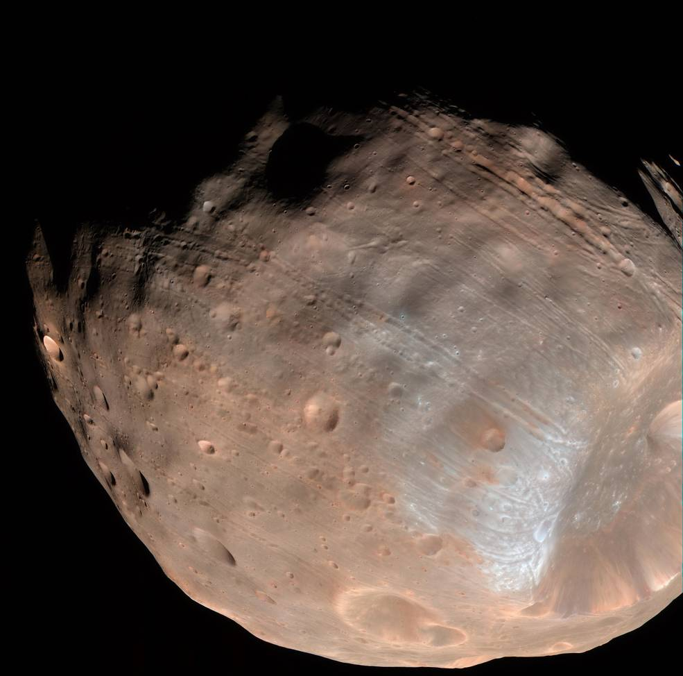

Mars
Description

Mars (prononcé en français : /maʁs/) est la quatrième planète du Système solaire par ordre croissant de la distance au Soleil et la deuxième par ordre croissant de la taille et de la masse. Son éloignement au Soleil est compris entre 1,381 et 1,666 UA (206,6 à 249,2 millions de kilomètres), avec une période orbitale de 669,58 jours martiens (686,71 jours ou 1,88 année terrestre). C’est une planète tellurique, comme le sont Mercure, Vénus et la Terre, environ dix fois moins massive que la Terre mais dix fois plus massive que la Lune. Sa topographie présente des analogies aussi bien avec la Lune, à travers ses cratères et ses bassins d'impact, qu'avec la Terre, avec des formations d'origine tectonique et climatique telles que des volcans, des rifts, des vallées, des mesas, des champs de dunes et des calottes polaires. Le plus haut volcan du Système solaire, Olympus Mons (qui est un volcan bouclier), et le plus grand canyon, Valles Marineris, se trouvent sur Mars. Mars a aujourd'hui perdu la presque totalité de son activité géologique interne, et seuls des événements mineurs surviendraient encore épisodiquement à sa surface, tels que des glissements de terrain, sans doute des geysers de CO2 dans les régions polaires, peut-être des séismes, voire de rares éruptions volcaniques sous forme de petites coulées de lave
Atmosphére
La pression et la composition exactes de l'atmosphère de Mars sont connues grâce aux premières analyses in situ effectuées en 1976 par les atterrisseurs des sondes Viking 1 et Viking 228. Le premier observateur à avoir supposé l'existence d'une atmosphère autour de Mars est l'astronome (et compositeur) germano-britannique William Herschel qui, en 1783, attribue à la météorologie martienne certains changements observés à la surface de la planète, notamment des points blancs interprétés comme des nuages. Cette hypothèse est contestée au début du siècle suivant grâce aux progrès des télescopes à miroir, qui fournissent des images de meilleure qualité semblant montrer au contraire une surface plus statique, jusqu'à ce que surgisse à la fin du xixe siècle le débat sur la réalité des canaux de Mars observés en Italie et popularisés par l'astronome amateur américain Percival Lowell. Un autre Américain, William Wallace Campbell, astronome de profession et pionnier de la spectroscopie, demeure sceptique quant à l'existence d'une atmosphère importante autour de Mars et annonce à l'occasion de l'opposition de 1909 n'avoir pu détecter aucune trace de vapeur d'eau dans cette éventuelle atmosphère ; son compatriote Vesto Slipher, qui soutient la théorie des canaux, annonce quant à lui le contraire. En se fondant sur les variations d'albédo du disque martien, Percival Lowell estime en 1908 la pression atmosphérique au sol à 87 mbar (8 700 Pa), valeur qui demeure plus ou moins la référence jusqu'aux mesures réalisées par la sonde Mariner 4 en 1965. La difficulté à analyser la composition de l’atmosphère martienne par spectroscopie est alors généralement attribuée à la présence de diazote, difficile à caractériser par cette technique, et c'est ainsi que l'astronome français Gérard de Vaucouleurs, qui travaille alors en Angleterre, émet en 1950 l'idée que l'atmosphère martienne serait constituée de 98,5 % de diazote, 1,2 % d'argon et 0,25 % de dioxyde de carbone. À l'observatoire McDonald du Texas, l'astronome américain d'origine néerlandaise Gerard Kuiper établit en 1952 à partir du spectre infrarouge de Mars que le dioxyde de carbone est au moins deux fois plus abondant dans l'atmosphère martienne que dans l’atmosphère terrestre, l'essentiel de cette atmosphère devant être, comme la nôtre, constituée selon lui de diazote
composition chimique
Entre les années 1970 et 2010 les modèles de la composition de Mars se sont fondés sur celle des chondrites carbonées de type CI, considérées comme représentatives de la partie condensable de la nébuleuse protosolaire, et sur les modèles de condensation de la nébuleuse, compte tenu de la distance de Mars au Soleil. Ils ont pour l'essentiel admis que les proportions relatives des éléments aussi ou plus réfractaires que le manganèse étaient celles des CI, et que celles des éléments moins réfractaires étaient données par leurs corrélations avec les éléments réfractaires, observées ou déduites des modèles de condensation77. Au début du xxie siècle sont apparues des discordances entre les données spectroscopiques sur la composition de la photosphère solaire et d'autres approches de la composition du Soleil (héliosismologie, flux de neutrinos solaires, composition du vent solaire et données expérimentales sur l'opacité des métaux dans les plasmas de haute température), qui ont remis en question la représentativité des CI. Les compositions isotopiques (notamment des éléments O, Ni, Cr, Ti, Mo et W) et les teneurs en éléments en traces ont par ailleurs conduit à considérer les chondrites carbonées séparément des autres chondrites (essentiellement les chondrites ordinaires et les chondrites à enstatite), les premières restant représentatives des corps accrétés loin du Soleil mais les secondes étant désormais considérées comme mieux représentatives de la matière condensée dans les zones internes du Système solaire (dont la Terre et Mars). Un nouveau modèle de composition, fondé sur l'analyse des météorites martiennes, sur les mesures des sondes martiennes et sur les corrélations observées dans les chondrites non carbonées, implique des teneurs en éléments réfractaires 2,26 fois supérieures à celles des CI, et des teneurs en éléments lithophiles modérément volatils systématiquement plus basses (le rapport dépendant de la température de condensation de chaque élément). L'une des conséquences de ce modèle est que le noyau martien comporterait moins de 7 % pds de soufre (contre plus de 10 % selon les modèles antérieurs) mais en revanche un peu d'oxygène et d'hydrogène
Phobos
le satellite naturel de Mars le plus proche de sa planète, est une masse irrégulière de 27 × 22 × 18 km qui orbite à moins de 6 000 km d'altitude, au point de n'être pas visible depuis les régions polaires de la surface martienne, au-delà de 70,4° de latitude nord ou sud, où il est masqué par la courbure de la planète. La sonde Mars Global Surveyor a révélé que sa surface, très cratérisée, est recouverte d'un régolithe épais d'une centaine de mètres provenant sans doute des myriades d'impacts survenus à la surface de cet objet. Sa masse volumique moyenne est moitié moindre que celle de Mars, à un peu moins de 1 890 kg/m3, suggérant une nature poreuse résultant d'une structure en blocs agglomérés dont la cohésion globale serait assez faible. Il s'agirait d'un astéroïde de type D, c'est-à-dire constitué de matériaux où dominent les silicates anhydres avec une proportion notable de carbone, de composés organiques ainsi que, peut-être, de glace d'eau. Il aurait une composition proche d'une chondrite carbonée, expliquant son albédo d'à peine 0,071. La nature minéralogique de la surface examinée par le spectromètre infrarouge ISM de la sonde Phobos 2 semble correspondre à de l'olivine avec localement des concentrations d'orthopyroxène211. La présence d'eau en surface du satellite a clairement été écartée par plusieurs études212,213 mais ne demeure pas exclue en profondeur.
Deimos

Le second satellite de Mars, Déimos, est encore plus petit que le premier, avec des dimensions de 15 × 12,2 × 10,4 km. Il orbite à un peu plus de 23 000 km d'altitude, sur une orbite quasiment circulaire inclinée de moins d'un degré par rapport à l'équateur martien. Il semble être de même nature que Phobos — astéroïde de type D de composition proche d'une chondrite carbonée — mais sa surface, a priori tout aussi cratérisée que celle de Phobos, serait nettement plus adoucie par une couche de régolithe suffisamment épaisse pour combler la plupart des cratères. La masse volumique de ce régolithe a été estimée au radar à environ 1 100 kg/m3, celle du satellite dans son ensemble étant de l'ordre de 1 470 kg/m3. Les vues prises par Mars Reconnaissance Orbiter ont montré une surface de couleur variable selon les régions, le régolithe ayant une teinte rouge sombre plus prononcée que les surfaces semble-t-il plus récentes, situées autour de certains cratères et sur le bord des arêtes. Les catenae formant les sillons caractéristiques de la surface de Phobos n'ont pas été observées sur Déimos.
| masse | graviter | duree rotation | satellites | revolution | Mars | 6,39 × 10^23 kg | 3,721 m/s² | 1j 0h 37m | 2 | 1,027 jour | Phobos | 1,072 × 1016 kg | 1,62 m/s² | verouillage gravitationnelle | 0 | 7 h 39 min | Deimos | 1,476 × 10^15 kg | 0,003 9 m/s2 | verouillage gravitationnelle | 0 | 30 heures et 18 minutes. |
|---|